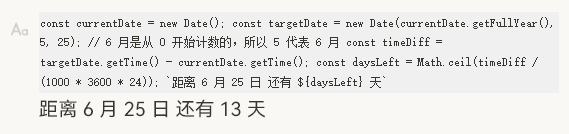

v0.0.8表达式插件更新
此次更新特别感谢
@JeffreyChen
的爱发电支持以及提出的
https://github.com/2234839/siyuan_expr/issues/2
插件会不断对发生变化的块进行求值，但为了避免产生大量运算和读写，依据块的 update 字段进行了一些优化，在插件初次启动时会对所有表达式进行一次求值，之后只会对更新了的块的表达式进行求值。
如果想要触发求值，可以手动随意修改一下块内容。
我有个想法，把这个当作动态的模板来用。
能不能实现打开文档的时候就刷新一下这个块？（或者动态加载出这个块的时候刷新）
还有这一坨 JS 显示在块上面不太美观

本次实现：
切换页签时刷新页面中的表达式
上方 js 显示改成只展示一行,鼠标悬浮在块上方时展示全部